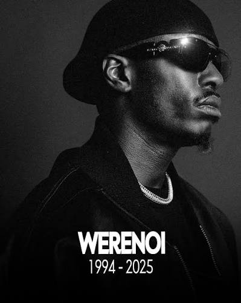

01 — La vie de Werenoi
Découvrez son enfance, ses débuts dans le rap, son ascension et les grandes étapes de sa carrière.
Découvrir sa vieSa vie, sa carrière et son dernier album Diamant Noir
Werenoi était un rappeur français originaire de Montreuil. En quelques années seulement, il est devenu l'un des artistes les plus importants du rap français.
Ce site présente son parcours ainsi que son dernier album, Diamant Noir, sorti en avril 2025.

Découvrez son enfance, ses débuts dans le rap, son ascension et les grandes étapes de sa carrière.
Découvrir sa vieDécouvrez son dernier album, sa date de sortie, ses collaborations et quelques-uns de ses titres.
Découvrir l'album| Année | Événement |
|---|---|
| 1994 | Naissance de Werenoi à Melun |
| 2021 | Sortie de « Guadalajara » |
| 2022 | Sortie de l'EP Telegram |
| 2023 | Sortie de Carré |
| 2024 | Sortie de Pyramide et Pyramide 2 |
| 2025 | Sortie de Diamant Noir |